Machine Learning for Accelerator Physics
A beginner’s tour of the methods — with hands-on exercises
November 2026
Today’s plan
- Why machine learning for accelerators?
- Machine learning from scratch
- model, loss, training
- neural networks, step by step
- overfitting and test sets
- A tour of the methods
- surrogate models · Bayesian optimisation
- anomaly detection · reinforcement learning
- differentiable simulations
- Good practice & take-home messages
Hands-on afterwards 4 notebooks, run in your browser on Google Colab, using the differentiable beam-dynamics code Cheetah. No installation needed.
Prerequisites Basic Python. Basic beam optics (drift, quadrupole, beam size). No prior machine-learning knowledge.
One running example All along, we use the same small beamline: three quadrupoles and a screen.
Why machine learning for accelerators?
An accelerator is a function with many knobs
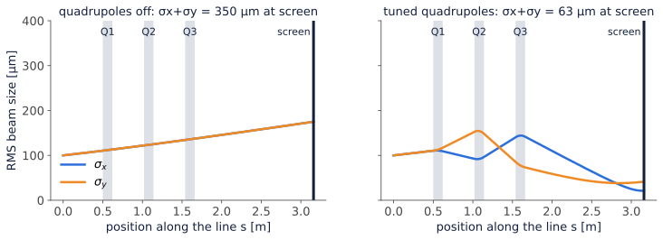
Inputs: magnet currents, RF phases and amplitudes, laser settings… → Outputs: beam size, position, energy spread, losses, FEL pulse energy…
Three quadrupoles here; hundreds to thousands of knobs on a real machine.
What makes it hard?
🎛️ Many coupled parameters Changing one magnet changes the optimum of all the others.
📉 Noisy, partial diagnostics Shot-to-shot jitter; many quantities cannot be measured without destroying the beam.
🌡️ Drifts Temperature, ageing, hysteresis: yesterday’s optimum is not today’s.
🖥️ Expensive simulations Space charge, CSR, wakefields: minutes to hours per run.
⏱️ Precious beam time Every tuning minute is taken from the users.
🗄️ …but lots of data Archived signals from thousands of sensors, every second.
Four families of tasks
🎯 Tune & optimise Find the best settings with as few trials as possible.
→ Bayesian optimisation, RL, gradients
🔮 Model & predict Fast surrogates of simulations; “virtual diagnostics” of unmeasurable quantities.
→ supervised learning
🚨 Detect & diagnose Faulty sensors, RF trips, beam losses, before they hurt.
→ anomaly detection, classification
🔁 Control Keep the beam stable against drifts, act in real time.
→ reinforcement learning
ML does not replace beam physics — it uses it, and fills the gaps.
Machine learning from scratch
From writing rules to learning them
Classical approach A human writes the rules (physics model, thresholds); the computer applies them to data.
e.g. “flag a BPM if |x| > 2 mm”
Machine learning The computer finds the rules from examples (or from a goal). The result is called a model.
e.g. “learn what normal BPM data look like”
A program learns when its performance on a task, measured by some metric, improves with experience (= data).
Three ways to learn
Supervised Examples with the right answer: (input, output) pairs. Learn the mapping input → output.
Accelerator example: magnet settings → beam size; RF signals → fault type.
Unsupervised Data without answers. Find structure: groups, low-dimensional patterns, outliers.
Accelerator example: spot faulty BPMs in logged data.
Reinforcement An agent acts, receives a reward, and improves its strategy by trial and error.
Accelerator example: learn to focus the beam by moving magnets.
We start with supervised learning: it contains all the key ideas.
Our running example: a dataset
We scan quadrupole Q1 and record the beam size σx on the screen — 25 measurements.
| sample | input \(x\) \(k_1\) of Q1 [1/m²] |
target \(y\) σx [µm] |
|---|---|---|
| 1 | −11.8 | 527 |
| 2 | 2.2 | 104 |
| 3 | 9.4 | 148 |
| 4 | 21.1 | 513 |
| … | … | … |
| 25 | 24.4 | 615 |
Vocabulary One row = a sample. The quantity we know = the input (or feature). The quantity we want to predict = the target (or label). All rows = the dataset.
The question Can the computer learn the relation \(y = f(x)\) from these 25 rows alone, without being told the beam-optics formula?
Why bother, here? Here we know the physics. But with 300 magnets, space charge and imperfections, we often don’t — the same recipe still works.
The four ingredients of (almost) every ML method
- Data — the samples \((x_i, y_i)\)
- Model — a function with adjustable parameters \(\theta\): \(\hat y = f_\theta(x)\)
a straight line has 2 parameters: \(\hat y = \theta_1 x + \theta_0\) - Loss — one number saying how wrong the model is on the data
- Optimiser — a procedure that changes \(\theta\) to make the loss smaller
Physicist’s translation This is fitting! A least-squares fit of a line is already machine learning.
What is new? Models that are much more flexible (thousands of parameters), and a strong focus on predicting new data correctly.
Measuring how wrong a model is: the loss
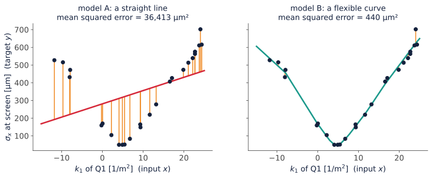
For each sample, the residual (orange) is the gap between data and model. The mean squared error averages the squared residuals: \[ L(\theta) = \frac{1}{N}\sum_{i=1}^{N} \left(f_\theta(x_i) - y_i\right)^2 \]
Squaring makes every error positive and penalises big errors strongly. Training = finding the parameters θ with the smallest loss. A straight line cannot do better than model A: we need a more flexible model.
Training = walking downhill on the loss
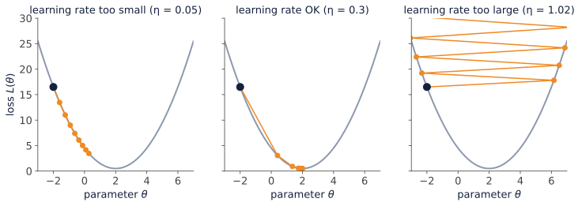
Gradient descent, repeated many times:
- compute the slope of the loss, \(\partial L/\partial\theta\)
- take a small step downhill: \(\theta \leftarrow \theta - \eta\,\dfrac{\partial L}{\partial\theta}\)
The learning rate η The step size. Too small: very slow. Too large: the steps overshoot and the training diverges. It is the first knob to adjust when training does not work.
The same idea in two (or 10 000) dimensions
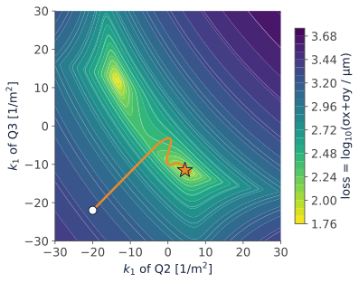
Here the two parameters are quadrupole strengths and the “loss” is the beam size at the screen (Q1 fixed). Colours = height of the landscape.
The orange path is gradient descent (Adam variant) starting from the white dot: it follows the valley to a minimum ★.
Gradient descent is local: it finds the bottom of the valley it starts in, not necessarily the deepest one. You will see this in exercise 0.
Training a neural network = exactly this, with thousands of parameters (the weights).
Neural networks, step by step
Why do we need neural networks?
1 · We rarely know the formula For a real machine (errors, space charge, many coupled knobs), nobody can write \(y=f(x)\) by hand.
2 · Classical fits do not scale A polynomial in 1 variable is easy. In 100 variables, the number of terms explodes.
3 · We want a universal “Lego” One simple building block, repeated and combined, able to approximate any smooth function.
A neural network is that Lego: many copies of one very simple brick — the neuron — whose parameters are found by gradient descent.
The brick: one artificial neuron
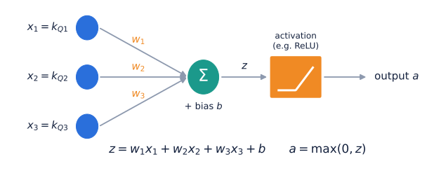
- multiply each input by a weight \(w_j\) (how much it matters, and with which sign)
- add them up, plus a bias \(b\) (an offset)
- pass the result through an activation function, here ReLU: keep \(z\) if positive, else 0
Worked example inputs \(k = (5,\,-13,\,12)\), weights \(w = (0.2,\,-0.1,\,0.05)\), bias \(b = 0.5\)
\(z = 0.2\cdot5 + (-0.1)(-13) + 0.05\cdot12 + 0.5\)
\(\phantom{z} = 1.0 + 1.3 + 0.6 + 0.5 = 3.4\)
\(a = \max(0,\,3.4) = 3.4\)
Another neuron with \(w = (-0.3,\,0.1,\,0)\), \(b = 0.2\) gives \(z = -2.6\), so \(a = 0\): this neuron is “off” for this input.
Why an activation function?
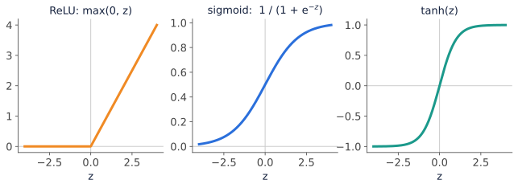
Without activation Each neuron is a weighted sum = a linear function. Combining linear functions only gives another linear function: the whole network would be a straight line (model A!).
With activation The small non-linearity (a kink for ReLU, an S-shape for sigmoid/tanh) is what lets the network bend. ReLU is the most common today: simple and fast.
Building a curve from neurons
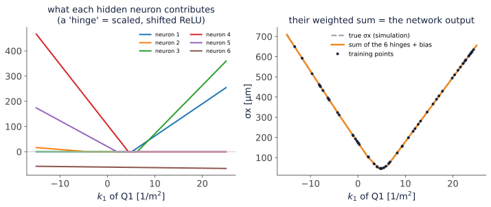
A network with one hidden layer of 6 ReLU neurons, trained on our beam-size scan. Each neuron contributes a hinge (left: weight × ReLU, shifted by its bias). The output neuron adds the 6 hinges (right). Training chooses where each hinge bends and how steep it is. More neurons ⇒ more hinges ⇒ finer approximation of any curve.
From neurons to a network
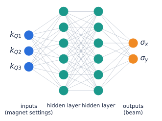
- Input layer: the numbers we know (3 magnet strengths)
- Hidden layers: neurons fed by the previous layer; each layer combines the features of the one before
- Output layer: the predictions (σx, σy), usually without activation
How many parameters? The network of exercise 1: 3 → 64 → 64 → 64 → 2.
Each neuron has one weight per input + one bias: \((3{\cdot}64{+}64) + 2\,(64{\cdot}64{+}64) + (64{\cdot}2{+}2) =\) 8 706.
“Deep learning” = networks with many hidden layers.
How a network learns
① Forward pass Feed the inputs of a batch of samples through the network → predictions \(\hat y\).
② Loss Compare with the targets: \(L\) = mean of \((\hat y - y)^2\).
③ Backward pass Backpropagation: the chain rule, applied layer by layer from the output back to the input, gives \(\partial L/\partial w\) for every weight.
④ Update Move every weight a little downhill: \(w \leftarrow w - \eta\,\partial L/\partial w\).
Repeat ①–④. One pass over the whole dataset = one epoch; training takes tens to thousands of epochs.
You never write the derivatives yourself: libraries (PyTorch, JAX, TensorFlow) compute them automatically (automatic differentiation). In scikit-learn, one line: MLPRegressor().fit(X, y).
Watching a network learn
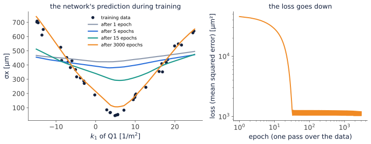
Network with 2 hidden layers of 32 neurons, trained on 40 noisy measurements. At the start the weights are random: the prediction is almost flat. Epoch after epoch, gradient descent bends it toward the data, and the loss decreases until it reaches the noise level of the measurements — it cannot (and should not) do better.
Generalisation: the danger of overfitting
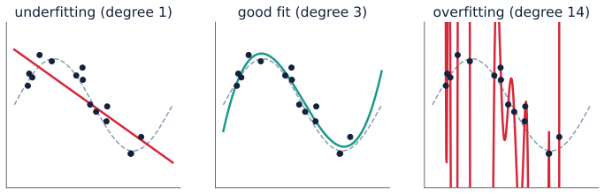
Underfitting: model too rigid, misses the trend.
Good fit: captures the trend, ignores the noise.
Overfitting: passes through every point — including the noise — and predicts nonsense in between.
A model that is perfect on its training data tells you nothing about new data.
Always keep a test set
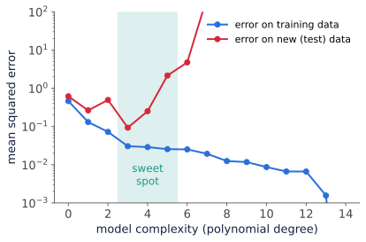
As the model becomes more flexible, the training error always decreases, but the error on new data goes down, then up.
Split the data before anything else training set (≈ 70 %) to fit · validation set (≈ 15 %) to choose the model · test set (≈ 15 %) for the final, honest score — used once.
On accelerators Consecutive shots are correlated and the machine drifts: test on data from another run or day.
Neural networks: strengths and limits
✔ Strengths
- approximate (almost) any function, in many dimensions
- once trained, very fast (µs per prediction)
- handle images and time series (beam images, RF waveforms)
✘ Limits
- need a lot of data (simulation or archived)
- interpolate well, extrapolate badly — and do not warn you
- hard to interpret (“black box”); no uncertainty by default
Rule of thumb: always compare with a simple baseline (linear fit, lookup table…). The neural network must beat it to be worth it.
A tour of the methods
1 · Surrogate models: the idea
Replace a slow simulation (or a measurement) by a fast neural network trained to imitate it.
① Generate data Run the simulator for thousands of random settings (on a cluster, once).
② Train Fit a neural network: settings → simulated outputs.
③ Validate Check it on simulations it has never seen (test set).
④ Use Millions of predictions per second: scans, optimisation, online model in the control room.
Virtual diagnostic Same idea with measured data: predict a quantity that is destructive or slow to measure (e.g. the longitudinal phase space) from signals that are always available.
Surrogate models in practice
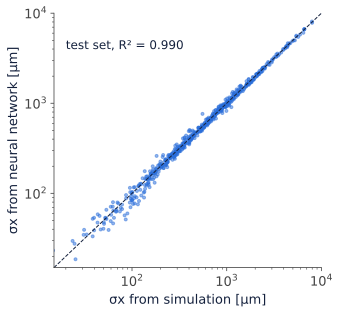
Parity plot: each point is one test setting. On the diagonal = perfect prediction.
Network 3 → 64 → 64 → 64 → 2 trained on 2400 simulations of the exercise beamline; it predicts log σ (beam sizes span 3 orders of magnitude).
Pitfalls (you will test them) too few training samples; settings outside the training range (extrapolation); the machine is not the simulation (errors, drifts).
In the literature LCLS / FACET-II longitudinal phase-space virtual diagnostic (Emma et al. 2018); surrogate-based multi-objective optimisation, orders of magnitude faster (Edelen et al. 2020).
Emma et al., PRAB 21, 112802 (2018) · Edelen et al., PRAB 23, 044601 (2020).
2 · Bayesian optimisation: the setting
Tuning on the real machine:
- no formula and no gradient
- every measurement is noisy
- every measurement costs beam time ⇒ we can afford ~10–100 trials, not 10 000
How would a careful operator do it? Remember every trial so far, build a mental picture of the landscape, and choose the next trial either where it looks good, or where they know too little.
Bayesian optimisation does exactly that
- a surrogate with uncertainty of the objective, rebuilt after every measurement: the Gaussian process
- a rule to pick the next trial, balancing “good” and “unknown”: the acquisition function
- measure, add the point, repeat
The Gaussian process: a fit that knows what it does not know
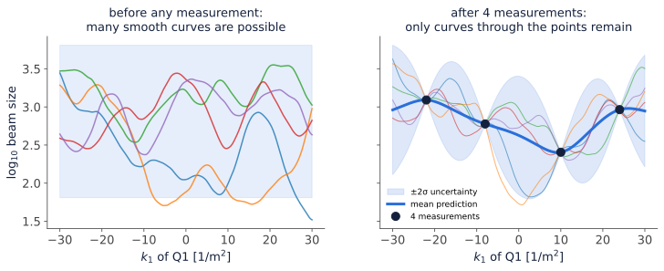
A GP considers all smooth curves compatible with the data. Where measurements are close, curves agree: low uncertainty. Far from measurements, they disagree: high uncertainty.
The kernel encodes “nearby settings give similar beams” — with a length scale: how far apart two settings can be and still be similar. It is learned from the data.
Explore or exploit? The acquisition function
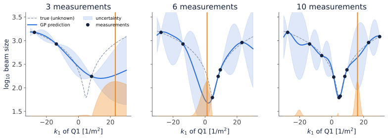
Expected improvement (orange area): how much a new trial at \(x\) is expected to beat the best value so far. It is large where the prediction is low (exploit) or the uncertainty is large (explore). The next trial is at its maximum (orange line).
Use BO when: each evaluation is expensive and noisy, no gradients, ≲ 20 knobs. Now a standard tool in control rooms (e.g. the Xopt library).
Duris et al., PRL 124, 124801 (2020) — BO of the LCLS FEL · Roussel et al., PRAB 27, 084801 (2024) — review · Xopt.
3 · Anomaly detection: learn what “normal” looks like
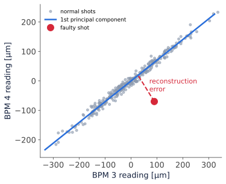
Two neighbouring BPMs see the same orbit jitter: their readings are strongly correlated. Normal shots lie close to a line.
PCA (principal component analysis) finds that line (in general: the few directions in which the data vary most) from the data alone, without any optics model.
Anomaly score the distance of a shot to the line (reconstruction error). The faulty reading is not large — it is inconsistent with the other BPM.
No labels needed: this is unsupervised learning.
Another detector: the Isolation Forest
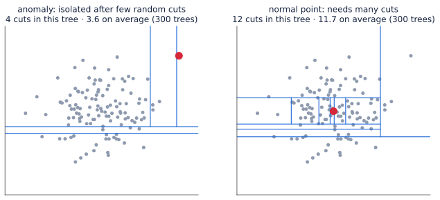
Cut the data with random vertical/horizontal lines until the point is alone. Anomalies are “few and different”: they are isolated after few cuts. Repeat with many random “trees” and average: the average number of cuts is the anomaly score. No assumption of linearity needed.
Anomaly detection & fault classification in practice
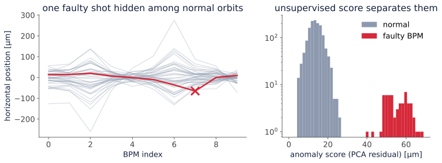
Unsupervised — no labels Faulty BPMs at the LHC detected with an Isolation Forest.
Supervised — with labels Once experts have labelled past events: classify fault types, e.g. SRF cavity trips at CEBAF from RF waveforms.
Fol et al., PRAB 23, 102805 (2020) — faulty BPM detection (LHC) · Tennant et al., PRAB 23, 114601 (2020) — SRF cavity fault classification (CEBAF).
4 · Reinforcement learning: the vocabulary
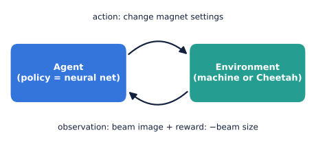
Example: focus the beam on a screen.
- State / observation: what the agent sees — the beam image, current magnet settings
- Action: what it can do — change the magnet strengths a little
- Reward: a number saying how good the result is — e.g. minus the beam size
- Policy: the agent’s strategy, observation → action — usually a neural network
- Episode: one attempt, from a random start until the beam is focused (or time is up)
Reinforcement learning: how the agent learns
- start with a random policy: actions are nonsense
- play many episodes; record (observation, action, reward)
- adjust the policy network so that actions leading to high total reward become more likely
- repeat — typically 10⁴–10⁶ episodes
Where do we find a million episodes? Not on the machine! Train in a fast simulator (e.g. Cheetah), with randomised errors so the agent becomes robust, then deploy on the real machine (sim-to-real transfer).
Strengths Once trained, acts in a few steps; can react to changing conditions (feedback).
Costs Long training, careful reward design, gap between simulation and reality.
RL or BO? Compared on the same real tuning task at ARES (DESY): RL fast once trained, BO ready out of the box with no training.
Kain et al., PRAB 23, 124801 (2020) — sample-efficient RL at CERN (AWAKE) · Kaiser et al., Sci. Rep. 14, 15733 (2024) — RL-trained optimisers vs BO at ARES.
5 · Differentiable simulations
A beamline is a chain of elements; the beam at the screen is a composition of functions: \[ \sigma_\text{screen} = f_\text{drift}\big(f_{Q3}\big(\dots f_{Q1}(\text{beam}_0;\,k_1)\dots\big)\big) \] The chain rule gives \(\partial\sigma/\partial k_1\) by multiplying the derivatives of each element.
Write the simulator in an ML framework (PyTorch) ⇒ it does this automatically, exactly as backpropagation in a neural network.
What gradients give you
- tune many magnets at once by gradient descent
- fit a model to measurements (system identification)
- train RL agents and neural components fast
Physics-informed ML Put physics into the model (conservation laws, symplecticity…): less data, better extrapolation. The trend: hybrid physics + ML models.
Kaiser et al., PRAB 27, 054601 (2024) — Cheetah, github.com/desy-ml/cheetah.
Which method when?
| Method | Learns from | Needs | Typical use | Exercise |
|---|---|---|---|---|
| Neural-net surrogate | (input, output) examples | 10³–10⁶ samples, mostly simulation | fast models, virtual diagnostics | 1 |
| Gaussian process / BO | each new measurement | 10–100 evaluations, ≲ 20 knobs | online tuning, noisy & expensive | 2 |
| PCA / Isolation Forest | unlabelled data | “mostly normal” data | faulty sensors, unusual states | 3 |
| Classifier (random forest, NN) | labelled events | expert labels | fault type identification | — |
| Reinforcement learning | interaction & reward | 10⁴–10⁶ episodes (simulator) | fast tuning, feedback control | — |
| Differentiable simulation | physics model + gradients | a differentiable model | many-knob tuning, model calibration | 0 |
Rule of thumb: start with the simplest method that could work (a linear fit, a threshold, a grid scan) — it is your baseline. An ML method must beat it to be worth deploying.
Good practice
What goes wrong in practice
🔍 Look at the data first Units, ranges, missing values, saturations, timestamps. Choose a good representation (e.g. log of beam size).
📏 Honest evaluation Separate test set, from another run or day. Compare with a simple baseline.
❓ Know what the model does not know Training domain, extrapolation, uncertainty (GPs, ensembles). Drifts ⇒ retrain.
🛡️ Safety in the control room Hard limits on actuators, slow ramps, operator in the loop, a “go back” button.
Toolbox: scikit-learn (classical ML) · PyTorch (neural nets) · Cheetah (differentiable beam dynamics) · Xopt / BoTorch (BO) · Gymnasium + Stable-Baselines3 (RL)
Take-home messages
1 ML = fitting flexible models to data: data, model, loss, optimiser. A neural network is a sum of many simple “hinges” whose shape is learned by gradient descent.
2 Pick the method from the task and the data you have: surrogate, BO, anomaly detection, RL, differentiable simulation.
3 Physics + ML beats either alone. Start simple, keep a test set, know the limits.
Your turn: the exercises
All notebooks run in the browser on Google Colab (free Google account) — click, then Runtime → Run all.
| # | Notebook | Method | |
|---|---|---|---|
| 0 | First beamline with Cheetah | tracking, manual & gradient-based tuning | |
| 1 | Neural-network surrogate | supervised regression | |
| 2 | Bayesian optimisation | GP + acquisition function | |
| 3 | Faulty BPM detection | unsupervised anomaly detection |
Cells marked ✏️ are for you. Solutions: notebooks/solutions/ in the GitHub repository.
To go further
Reviews
- Edelen et al., Opportunities in machine learning for particle accelerators, arXiv:1811.03172 (2018)
- Roussel et al., Bayesian optimization algorithms for accelerator physics, PRAB 27, 084801 (2024)
Software
- Cheetah — github.com/desy-ml/cheetah
- Xopt — github.com/xopt-org/Xopt
- scikit-learn — scikit-learn.org
Applications cited
- Emma et al., PRAB 21, 112802 (2018) · Edelen et al., PRAB 23, 044601 (2020)
- Duris et al., PRL 124, 124801 (2020)
- Fol et al., PRAB 23, 102805 (2020) · Tennant et al., PRAB 23, 114601 (2020)
- Kain et al., PRAB 23, 124801 (2020) · Kaiser et al., Sci. Rep. 14, 15733 (2024)
- Kaiser et al., PRAB 27, 054601 (2024)
Communities
- ICFA workshops on ML applications for particle accelerators
- RL4AA — reinforcement learning for autonomous accelerators
Questions?
Slides & exercises: hayg25.github.io/Lectures_ML4Accelerators
Source: github.com/hayg25/Lectures_ML4Accelerators
Backup — glossary
| Term | Meaning |
|---|---|
| Sample / input / target | one example; the quantity we know; the quantity to predict |
| Model, parameters | function with adjustable numbers (weights) mapping inputs to outputs |
| Loss | number measuring how wrong the model is; training minimises it |
| Gradient descent, learning rate | walk downhill on the loss; size of each step |
| Neuron, activation | weighted sum + bias, followed by a non-linear function (ReLU…) |
| Backpropagation | chain rule computing the gradient of the loss for every weight |
| Epoch | one pass over the whole training set |
| Overfitting | model learns the noise of the training data; poor on new data |
| Gaussian process, kernel | regression giving a mean and an uncertainty; kernel = notion of similarity |
| Acquisition function | rule deciding where Bayesian optimisation measures next |
| PCA | finds the few directions in which the data vary most |
| Policy, reward, episode | RL: strategy observation → action; score of an action; one attempt |
| Differentiable simulation | simulator that also returns gradients of its outputs |
ML for Accelerator Physics · H. Guler · github.com/hayg25/Lectures_ML4Accelerators